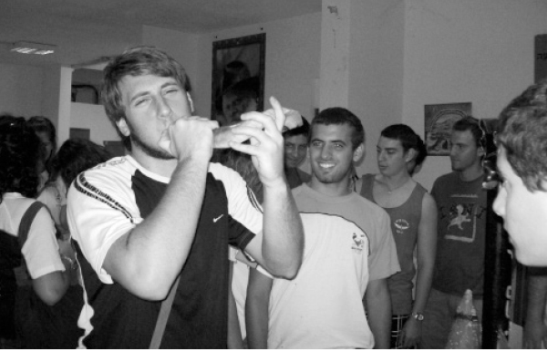

They Came for Kassams and Found Moshiach
In Sderot, the city identified with Kassam rockets and sirens, an entire tourism industry has been quietly developing. The shliach, R’ Moshe Zev Pizem, welcomes the thousands of young people who visit the city every year from all over the world. Many of them are exposed, for the first time in their lives, to a Jewish perspective, to the Rebbe and Chabad, and to emuna.
By Mordechai Segal

They had already visited Masada, the Dead Sea, Tel Aviv and even the holy city of Yerushalayim, but this was the first encounter in their lives with the front lines, with the city that has been attacked by tens of thousands of rockets in the past decade.
Two minutes after climbing the steep path, they reached the top of the hill. Around them were bright green fields; behind them were the red roofs of villas, and in front of them was the Gaza Strip.
Leading the group was a rabbi dressed in the usual black and white, with a beard and a hat. He explained to them in broken English what they saw. He is the spirit of the group despite the great difference in ages and even though, at first glance, there is no external connection between these modern looking youth and him.
“This is the Gaza Strip,” he told them, and they whistled in amazement followed by a long drawn out wow. “They shoot us from there,” he said with a smile.
If we didn’t have a sworn enemy, you might have thought that what happened next was timed in honor of the excited guests; for as he spoke, a Red Alert began to wail. The keen-eyed among them could see a plume of smoke emerging from the houses of Bet Chanun in the north of the Strip, a kilometer and a half away.
They all waited for instructions from their guide, the shliach R’ Moshe Zev Pizem. “Lie down on the ground,” he told them. Fifteen seconds passed and then they could hear the explosion. The rocket landed 500 meters south of them, next to Kibbutz Nir Am.
R’ Pizem himself remained standing. “I always see that those who stand here, run there, and those who stand there, run here; the general idea is simply to feel that you are doing something during those critical seconds,” he said smilingly as he gestured right and left. “I stand in place and don’t look for anything anywhere else.”
After experiencing what the residents of Sderot regularly go through, the group of tourists continued to the Chabad house, the fortified fortress which is both welcoming and air conditioned. It is located in the center of town.
FIRST GLIMPSE OF LUBAVITCH
They sit down in the large lobby and watch a documentary film produced by the Chabad house. They see the sacrifice and physical mesirus nefesh of their religious guide and learn that he came to this city to live with his extended family, only because a tzaddik, the Lubavitcher Rebbe, told him to. They also become aware of the fact that there are shluchim like him scattered around 4000 points of the globe, and this moves them.
The steady stream of tourists to Sderot began mainly after Operation Cast Lead in the Gaza Strip, nearly five years ago. Until then, only dedicated Israelis went to this southern city in order to do their shopping once a week to enable the city to survive.
After the military operation, when the name of the city was seen in news columns around the world, tour group operators for Jewish youth living abroad decided to bring Jewish kids to Sderot. The calmer security situation made this possible.
“Sderot became a must-see place on the itinerary of Heritage Tours,” explained R’ Pizem. “Just as no tourist would miss visiting the holy sites, these young people don’t skip Sderot. They want to know about it and see it for themselves.”
When this idea was in its infancy, the organizers looked for someone in the city to welcome the youth and tell them about day-to-day life. “Since we have a spacious Chabad house that can contain two hundred people at a time, all kinds of groups asked us for help. Of course, we said yes. It’s a golden opportunity to expose thousands of young Jews to Jewish belief, to the Rebbe, and to Chabad. We can never know who will harvest the seeds that we planted, and when this will happen.”
He was referring to the fact that many of the young people who come to Sderot are assimilated. They come from universities and high schools in Brazil and Uruguay, Russia and the Ukraine, Canada and the US, France and England.
“As soon as they enter the area, they see the huge graphite drawing of the Rebbe on the front of the Chabad house. Someone with a traditional Jewish appearance welcomes them and hosts them in the shul, which in itself is a big thing. For many of them, this is the first time they are meeting a religious Jew in a shul.”
At the Chabad house they hear about Sderot and watch some video shorts on a large screen, which portray for them the struggles involved in living in a city like Sderot. They see a video of the moments of terror when a Kassam rocket lands and watch victims of shock. Frequently, they meet with people who lost loved ones or are wounded.
“Our advantage, as a Chabad house, is that we don’t just show them the tragedy, but also the great Hashgacha Pratis of the relatively few injured considering the number of rockets. We tell them about the miracles. Then they get it; they realize that their peaceful lives are so distant from the self-sacrifice required of the residents of Sderot. They look at us like soldiers in the field of battle who are constantly dealing with this. We seem to lead normal lives, davening, learning, shopping, sitting with our families, sleeping, etc. but we are not living in a normal city.”
R’ Pizem said, “People always leave here in an emotionally charged state, especially after they watch the Chabad house promotional video. Some people cry and they all identify with our lot and admire our sacrifice as shluchim, for the place and the people.”
Most of the visitors do not keep in touch with the shliach, but he is sure that the visit will lead to change.
“For many of them, this is their first encounter with the Rebbe and with Lubavitch, and this gets them excited. They hear that there is a Rebbe in the world who cares about every Jew and who sent us here. I tell them that wherever they go, there is a shliach they can speak to about Judaism and whom they can ask for help. I suggest that they look on the Internet for addresses and phone numbers of Chabad houses, and every time I go to the Kinus HaShluchim, I get feedback from shluchim in places all over the world. They tell me about the young people who live in their city, who came to them and told them that they visited Sderot.
“They see how the Jewish nation is still in danger, that the goyim want to destroy us, and that it’s not a cliché or stories from the past. Some suddenly get it; they understand why it’s important to preserve their Jewish identity and not assimilate. All of them, without exception, feel that they belong to the Jewish people in this dangerous place and they admire our Jewish courage and our struggle to survive. The awareness of what is a Jew and how much sacrifice it requires burrows its way inside them.”
R’ Pizem says that there are small nuances which to us seem trivial, but they have an effect on these lost souls:
“When I go with them, on the way to a hilltop from where they can see Gaza or to where a Kassam landed, I tell the bus driver, for example, to make a right on Rechov Moshe Rabbeinu. They are shocked. They realize that this is the Holy Land where even the streets bear holy names. This very deep emotional experience, due to the security situation, only intensifies every detail and it’s amazing to see how many tears are shed here and how many former opinions are left behind. Whoever comes here leaves a different person. This happens every day.”
The topic of miracles and Hashgacha Pratis is not only in inseparable part of the program, but is the crowning feature of the entire experience. When the tourists see the pile of sooty Kassam missiles arranged in neat piles, and when they are told how dangerous they are and how few fatalities and injuries they have caused, they realize that Eretz Yisroel is not like Russia, the Ukraine, the US, or Holland. It is the land promised to the Jewish people and “the eyes of Hashem are upon it from the beginning of the year until the end.” The tourists see houses that were destroyed by direct hits and hear stories about people who had just left their house or had just entered a side room when the missile landed. They see that these are not coincidences but the Hand of G-d that protects the Jewish people.
WHY IS THE SHOFAR ON THE KASSAM MISSILE?
Most of the Jewish young people do not just visit but also help out in some way. After they watch the intensive work of the shluchim, see the music school that was founded by the Chabad house, see the daycare centers and the food distribution to the needy, they roll up their sleeves and want to be a part of this. Some plant flowers in front of the Chabad house. Others paint the outside or inside walls, pack food or even clean. And it’s all done with a smile and a feeling of satisfaction.
“There was a girl who came over to me, all excited, who wanted to shake my hand after the lecture as all the boys did. I told her with a smile, ‘My mother taught me not to touch that which doesn’t belong to me,’ and I declined to shake her hand. She was taken aback. She came over later and wanted to know why Judaism is such a benighted religion. When I explained things to her from a Jewish-Chassidic perspective, she was so impressed. She said this was the first time that she appreciated the religion and she never knew that Judaism has depth. She promised to further look into the significance of Torah and mitzvos and it was apparent that this visit had brought about a change in her.”
The boys put on t’fillin and many of them thus leave the category of “karkafta d’lo monach t’fillin.” It doesn’t always go easily though.
“Many times, they warn us not to suggest that the youth put on t’fillin because it’s religious propaganda. Some of them know we are a Chabad house and realize the significance of this and they are really opposed. I could say, ‘If you don’t want, don’t come,’ but then, of course, I would lose out on their visit, which for many is their entranceway to Judaism. I cannot refuse because I know that it is possible that for many of them, they will never get to meet a Jewish-Chassidic person. And yet, how can they come without my offering t’fillin?
“In that case, we do a simple thing. We tell one of them who seems to be the right candidate, usually the Israeli security guard, ‘If you’d like, there is a room inside where you can put on t’fillin.’ He says okay and we put t’fillin on with him in a nearby room with the door open.
“Within seconds, they are crowded around him and they all ask what he’s doing. He innocently tells them it’s a mitzva and a long line forms to do this mitzva. So we set it up so that they ask for it themselves, and it wasn’t we who initiated it.”
He had a similar situation with a shofar.
“It was the month of Elul and I wanted to blow the shofar for a group. The organizers vociferously opposed this so I simply put the shofar on the Kassam missile that I have near my office and which always draws attention. The students soon asked me what it was for. I told them it’s something interesting and that Jews blow it. I asked them if they know how to use it. Many of them tried and failed and then they asked me to show them how to ‘play’ it. Of course, I was happy to oblige and that is how they heard the shofar without my preaching to them.”
As for the Geula:
“I speak to them about how soon we will not need to fight, but will live peacefully and all Jews will live in Eretz Yisroel with the coming of Moshiach. They respond by saying that when this happens, I should make sure to arrange a ranch style house for them in Sderot since in Yemos HaMoshiach, this city will revert to the peaceful city it used to be.”
Beis Moshiach (staff). "They Came for Kassams and Found Moshiach." Beis Moshiach, no. 898 (October 15, 2013).